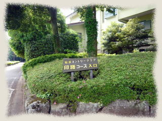
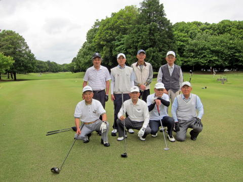
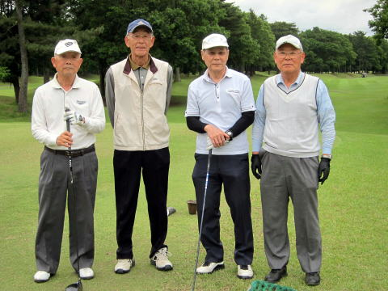
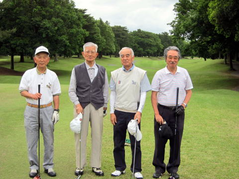
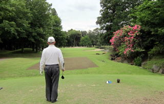
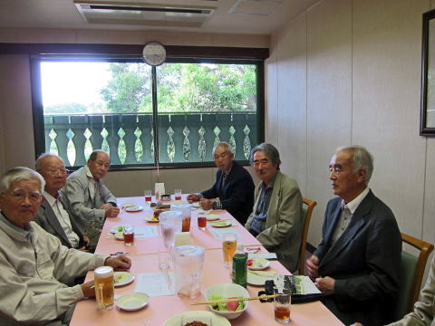
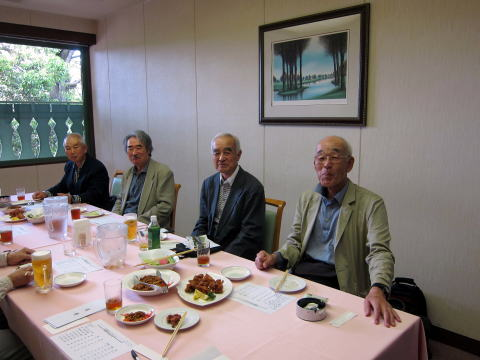
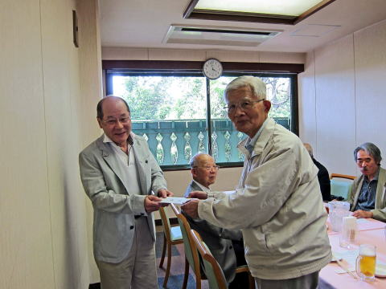

横浜国立大学工学部第四寮
第16回弘南寮ゴルフ大会
時：平成２８年０５月２０日（金）
| 第１６回大会は、久米、山之内両幹事のもと 平成２７年１０月２日に川崎国際生田緑地ゴルフ場で開催される予定であったが、生憎の雨の為中止となり、千葉に場所を改めて、本日のやり直し開催となった。 今回の参加者は、稲田幹事のもと総員８名、総武カントリー印旛コースに集い、微風快晴、絶好のゴルフ日和を満喫した。 幹事は稲田浩一さんのボランティア奉仕、また写真や成績レポートも稲田さんの提供でした。 多謝多謝。 |
 |
総員８名の揃い踏み
|  | 後列左から： ３９年機械 竹内章二 ３７年建築 野村安広 ３８年造船 久米範佳 ３４年機械 山之内克彦 前列左か ３８年建築 秋山正樹 ３６年電工 高石周志 ４０年機械 安岡慶和 ３８年電工 稲田浩一 |
| 第１組 | 第２組 |
|  |  |
何故かここで高石選手の模範演技
|  | |
成績発表 ＆ 反省会
|  |  |
|  | レポーター報告 ５月２０日のゴルフ会は、暑くも寒くもなく、かつ無風の中での快適なプレーでした。 結果は優勝が安岡さん、準優勝が山之内さん、三位が久米さんでした。 優勝賞品が最年長の山之内さんから安岡さんに贈られました。 |
次会は今年の秋、２０１６年１０月２５日（火曜日）
と決定いたしました。
| グロス | ハンディ | ＮET | 次回ハンディ | |||
| １組 | 稲田浩一 | 93 | 10 | 83 | 10 | |
| 高石 周志 | 101 | 17 | 84 | 17 | ||
| 久米範佳 | 99 | 17 | 82 | 15 | 第３位 | |
| 安岡 慶和 | 80 | 27 | 80 | 22 | 優勝 | |
| ２組 | 野村 安広 | 86 | 6 | 86 | 6 | ブービー賞 |
| 秋山正樹 | 90 | 16 | 90 | 16 | ||
| 山之内克彦 | 101 | 20 | 81 | 17 | 準優勝 | |
| 竹内章二 | 111 | 28 | 83 | 28 |
以上： 幹事 稲田浩一さん提供。